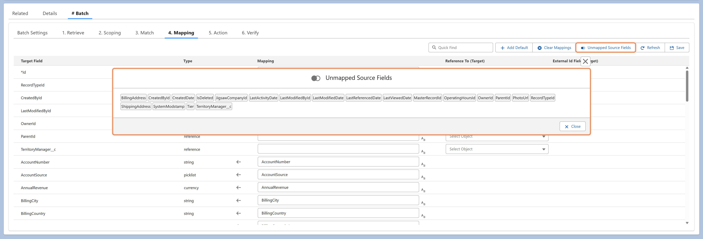

Unmapped Source Fields highlights source fields that aren't yet mapped to any target field — making it easy to review what's been left out and decide whether each should be included in the mapping.
